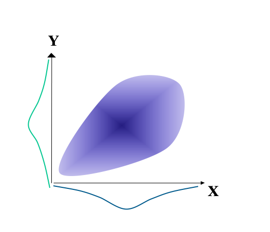
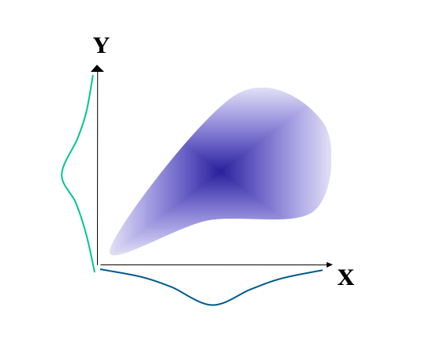
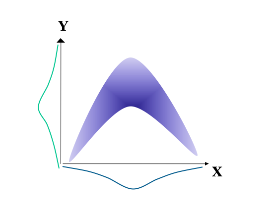
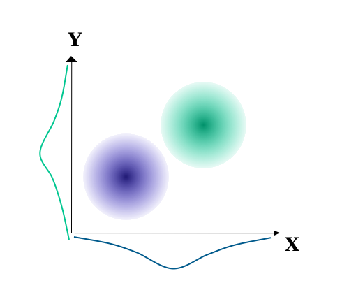
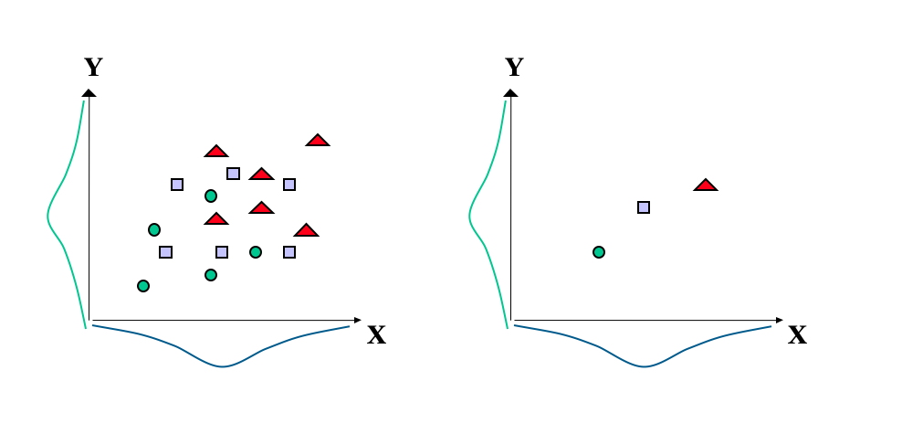

The validity of measurement
The previous sections on the reliability of measurement were concerned with the issue of consistency of measurement, and addressed such questions as how broad is the construct we wish to measure and how many items are needed to give reliable measurement of the construct. Answering these questions involved reliability analysis. Such analysis gives test constructors and test users some confidence that the test is giving a dependable measure with little error in measurement. Thus, meaningful measurement is a possibility. However, there is still a question of whether the test is any good for its intended use, that is, whether the test is measuring something appropriate, meaningful and useful. Many textbooks describe this as establishing whether the test actually measures what it claims to measure and this is termed the validity of measurement. Traditionally, issues of validity are considered under three categories of evidence:
- Content validity
- Criterion related validity
- Construct validity
A distinction needs to be drawn between these categories of evidence and what the test merely appears to be for test users and test takers. The extent to which the test appears to be measuring what it claims to measure, without reference to any evidence from outside of the test itself, can be described as face validity. Thus, the instructions for the test, the practice items and main test content may all appear to be relevant to the construct the test claims to measure. This impression can sometimes be misleading, but it may be useful for the test candidate to see the apparent relevance of the test.
In contrast to face validity, the three categories of validity evidence link the test to sources of evidence outside of the test itself.
Content validity
This is the extent to which the test content accurately reflects the content domain of the construct. This is easier to achieve for tests of achievement rather than tests of more abstract constructs such as spatial reasoning. Nevertheless, a test of spatial ability, for example, should probably include items involving the folding, rotation and comparison of complex visual images. Beyond this face validity, the test user should consult ‘expert sources’ to verify the content validity of the test e.g. the relevant academic literature, existing tests and people working in relevant occupations.
Criterion-related validity
This is the extent to which the test is related to external criteria (e.g. academic achievement for a test of intelligence or line manager ratings of job performance for a test of clerical ability). This is established through correlation between the test and the criterion. The relevance of the criteria depends upon the purposes of the test. A test of spatial ability, for example, may be expected to correlate with training and/or job performance for people within the engineering and construction industries. The criterion measures used to validate a test may be gathered at about the same time as the test scores or after a stated interval. This is the usual distinction between concurrent (same time) and predictive (with interval) validation.
Predictive validation
This is usually involved when attempting to predict future behaviour from current test score. Typically, this is for selection purposes (e.g. job applicants, college admissions, assignment to training programmes, etc). In its purest form, predictive validity involves obtaining test scores from applicants but not using these to make decisions; then at some later time correlating these earlier test scores with performance or outcome scores.
Concurrent Validation
By contrast concurrent validation is usually involved when attempting to assess current status/condition. Within an employment context this would mean that the test scores are correlated against performance measures for an already selected group.
What are the advantages and disadvantages of each procedure, and how do selection effects impact on the outcome of the procedures?
In the purest form predictive validation has the advantage of providing a direct measure of the actual relationship between test scores and future performance for the general applicant pool. However, there are practical and ethical difficulties with not using the test scores to make decisions (e.g. selecting people with low test scores who are likely to fail). If test scores are used to select applicants, then there will be a problem of range restriction (i.e. the full range of applicant test scores will not be represented in the correlation). Such range restriction, due to selection effects, will lower obtained correlations between test and criterion.
By contrast, concurrent validation has the advantage of being easier to conduct since it does not involve a significant time interval between testing and criterion measurement. Also, the sample size is likely to be larger, since it involves a usually quite large current population e.g. all present employees in a job role rather than the few people appointed during selection.
Such concurrent validity coefficients are sometimes used to assess the potential of the test for selection to a job role. However, this has the disadvantage that the current population is often not a good representation of the applicant pool: again, there is the problem of range restriction in the job holders scores compared to job applicant scores. Furthermore, in concurrent validation, the test may measure attributes not present in the applicants. For example, if a job involves learning necessary skills, which the test then measures, there may be a good correlation between test and job performance because it measures differences in the extent to which these skills have been learned. However, the applicants would not possess these skills, and so there could be no relationship between applicant test scores and future performance. With this selection effect, if the people involved in a concurrent validity study are quite different from the general applicant pool, then concurrent validation may not accurately assess the tests usefulness for decisions with applicants.
The need to examine the correlation scatterplot.
Whether the criterion related validity coefficient is concurrent or predictive, there is a need to examine the scatterplot of the relationship between test scores and criterion scores. A number of relationships are possible beyond the classic ‘ellipse’ relationship. For example, the figure below shows a heteroscedastic relationship. Here, as X goes up so does Y, but so too does the spread of scores in Y. This heteroscedastic correlation means that, in this case, as X increase there is increasing error in the prediction of Y.

There is a similar heteroscadastic relationship for the figure below. However, here there is also no relationship between X and Y for the higher scores on X. This relationship is termed a twisted pear (Fisher, 1959), and it is relatively common in psychometrics.

Other relationships may be described as curvilinear. For example, in the figure below case it is only the middle scores on X that are associated with high scores on Y. If X is used for selection, then we would need two cut-off scores: one for scores that are too low and one for scores that are too high.

Yet other relationships may be described as spurious. In the figure below there appears to be a reasonable correlation between X and Y when the data set is treated as a whole. However, this relationship is spurious in that it is entirely a consequence of the two different populations, which when considered separately reveal no correlation between X and Y.

Other misleading relationships are also possible. For example, the figure on the left below shows a reasonable relationship between X and Y. The three types of data points shown may, for example, have come from three different local validation studies. The figure to the right shows the same data, but here the data within each set has been averaged. Correlations that are based on averages are termed Ecological correlations and they tend to overestimate the strength of a relationship.

Construct validity
This is the extent to which the test has accumulated evidence illustrating the nature of its theoretical construct. This is an ongoing process, drawing on many interrelationships, which increasingly illuminates the extent to which the test may be said to measure a construct. As such, all forms of validity evidence mentioned above are relevant to construct validation, but it is broader than these procedures alone. A number of sources of evidence can contribute to construct validation, including:
The test’s correlation with other tests.
For example, scores from a test of spatial ability should correlate with other established tests that claim to measure a similar construct of spatial ability. However, the correlations such not be too high (i.e. about 0.6 rather than 0.9), since too high a correlation means that the tests duplicate each other. Of course, correlating a test with other established tests is only of use if the established tests have been shown to relate to observable behaviour outside of the tests. Furthermore, this test should not correlate very well with other tests that claim to measure quite different constructs. For example, a test of spatial ability should not correlate highly with knowledge of word meanings or mathematical ability.
Meaningful group differences.
For example, a test of spatial ability should give significant differences in the average scores between such groups as, on the one hand, architects and template designers, compared with groups that are not considered to require spatial ability.
Intervention or experimental effects.
For example, interventions such as visualisation training programmes or practical block building activities may be expected to improve scores on a test of spatial ability. Such interventions may take the form of an experiment, where, for example, one group receives the intervention and a comparison group does not.
The above are sources of evidence that support particular inferences made about the test scores. Validity then, really about establishing whether there is support for the inferences made about the test scores. There should be as many validity studies as there are inferences.
The relationship between reliability and validity:
The maximum validity coefficient between a test and criterion is equal to the square root of the two reliabilities multiplied together:
$ validity_{max} = $
A test cannot be valid if it is not reliable. However, a reliable test is not necessarily valid. Even if we have a test with little influence from error, what is being measured may not be meaningful and useful.